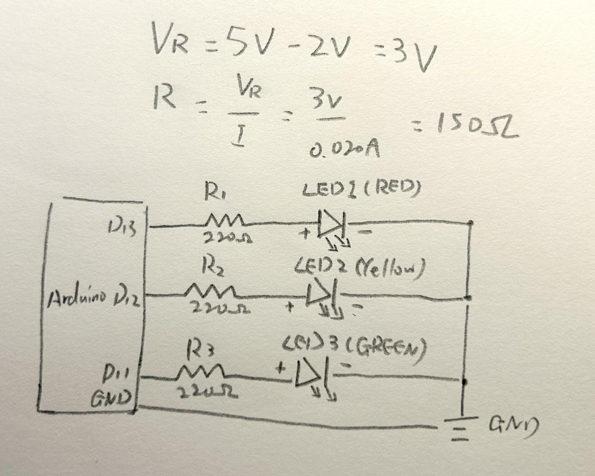
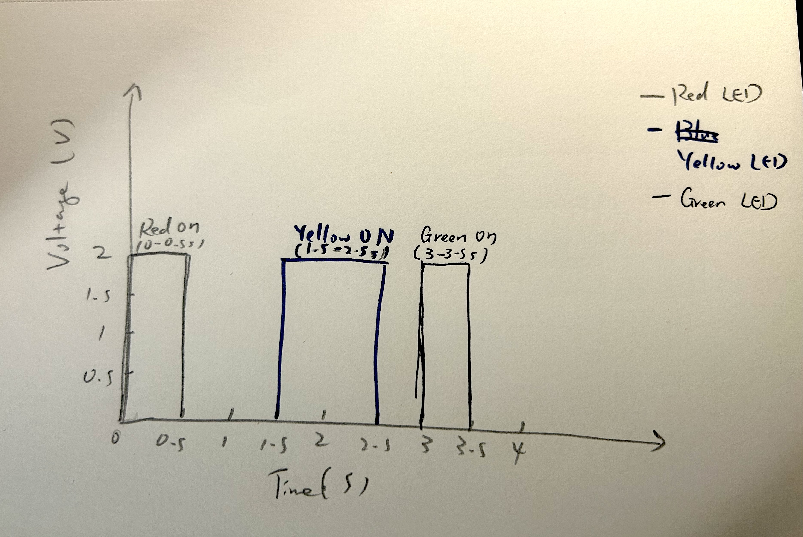

For the assignment, I created a blinking light pattern using three LEDs: red, yellow and green.

//A1: Blink!
//Assign pin 13 to the red LED.
int redLED = 13;
//Assign pin 12 to the yellow LED.
int yellowLED = 12;
//Assign pin 11 to the green LED.
int greenLED = 11;
//run the setup function once when the Arduino starts
void setup() {
//set the red led as an output
pinMode(redLED, OUTPUT);
//set the yellow led as an output
pinMode(yellowLED, OUTPUT);
//set the green led as an output
pinMode(greenLED, OUTPUT);
}
//Repeat the blinking pattern continuously
void loop() {
//turn on the red led
digitalWrite(redLED, HIGH);
//keep the red led on for 0.5 seconds
delay(500);
//turn off the red led
digitalWrite(redLED, LOW);
//wait 1 second before turning on the yelloq led
delay(1000);
//turn on the yellow led
digitalWrite(yellowLED, HIGH);
//keep the yellow led on for 1 second
delay(1000);
//turn off the yellow led
digitalWrite(yellowLED, LOW);
//wait 0.5 seconds before turning on the green led
delay(500);
//turn on the green led
digitalWrite(greenLED, HIGH);
//keep the green led on for 0.5 seconds
delay(500);
//turn off the green led
digitalWrite(greenLED, LOW);
//wait 1 second before repeating the pattern
delay(1000);
}


The Arduino Uno has 14 digital pins and 6 analog pins that can also be used as digital outputs, allowing up to 20 LEDs to be controlled independently. In my circuit, each LED uses a 220 Omega resistor. Assuming a 2V forward voltage, each LED draws approximately (5V - 2V) / 220 Omega = 13.6mA. If all 20 LEDs were turned on simultaneously, they would draw approximately 272mA in total. This exceeds the microcontroller's safe total I/O current capacity, so an external LED driver or transistors would be needed to operate all 20 at this current.
At around 50 to 60 flashes per second, the LEDs would generally begin to appear continuously lit rather than visibly blinking, although this varies with viewing conditions and individual perception. For example, setting both the ON and OFF delays to 10 milliseconds would produce one complete cycle every 20 milliseconds, resulting in a blinking frequency of 1000/20 = 50 Hz.